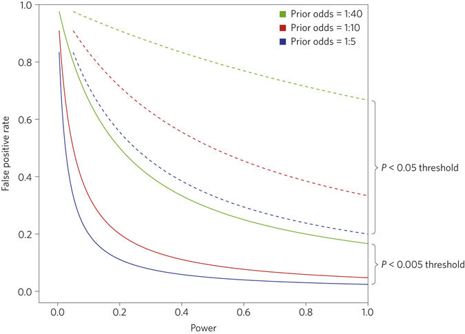

{{% tweet "890089098219835393" %}}
The adequacy of Null-Hypothesis-Significance-Testing (NHST) -and particularly of the dichotomised use of p-values- to scientific progress has long been questioned (e.g., Bakan, 1966; Gigerenzer, Krauss, & Vitouch, 2004; Kline, 2004; Lambdin, 2012). Despite this wealth of critics, the p-value stays one of the favourite statistical tool of the experimentalist. As an optimistic person though, I like to see recent institutional changes such as the ASA statement on the use of the p-values as an encouraging sign (Wassertein & Lazar, 2016). However, statements such as the ASA statement do not obtain a majority of agreements, neither within statisticians nor within applied scientists. Moreover, efforts to distancing p-values from scientific daily practice might be hindered by alternative usages of NHST that have been suggested during the last years (e.g., the New Statistics of Cumming, 2012).1
This summer was very prolific in regards to this debate, because many new ideas on NHST were presented and discussed (in pre-prints but also in blogposts). Noteworthy here is the rhythm of the debate, that has been insanely increased by the use of social media and by preprint sharing. In this post I will then try to summarise the highlights of this exciting saga.
Round I
The first bomb of this summer was posted online as a preprint on July 22, on PsyArxiv. This short proposal, co-authored by 72 researchers of several disciplines (including respected statisticians), mainly suggested to change the default threshold for statistical significance from 0.05 to 0.005. According to them, “This simple step would immediately improve the reproducibility of scientific research in many fields”. They also suggested to rename p-values falling between 0.005 and 0.05 as “suggestive” in place of the current “significant”.
The proposition of this particular threshold is motivated by a comparison of the p-value and the Bayes Factor (BF), showing that p-values around 0.05 are usually equivalent to BF10 in the range of 2.5-3.4, which is usually regarded as very weak evidence. In contrast, lowering the threshold to 0.005 would lead to equivalent BF10s in the range of 14-26, which corresponds to well… quite more convincing evidence.
Their second point is that lowering the threshold to 0.05 would lead to a more reasonable rate (lower) of false positive. The following figure shows the false positive rate as a function of power, for different levels of significance and different prior odds that there is a true effect.

“For many, the calculations illustrated by Fig. 2 may be unsettling. For example, the false positive rate is greater than 33% with prior odds of 1:10 and a P value threshold of 0.05, regardless of the level of statistical power. Reducing the threshold to 0.005 would reduce this minimum false positive rate to 5%. Similar reductions in false positive rates would occur over a wide range of statistical powers.”
This proposal also implies (and this is maybe the most crucial point) that sample sizes should increase (of approximately 70% on average), in order to keep power constant and to not inflates the rate of false negative.
Round II
Immediately after the publication of this preprint, the rebellion started to organise online, with Daniel Lakens as its head. Suddenly, a wealth of blogposts explaining why this proposal was a terrible idea appeared (see for instance here, here, here, or here). Three days later, Daniel Lakens launched on Twitter a massive appeal to a generalised rebellion, asking help to whoever wanted to join the fight.
This collaborative work gave birth on September 18 to the second bomb of the summer entitled Justify Your Alpha, and co-authored by Daniel Lakens and 87 alphabetically ordered authors.
The main argument of this proposal is that p-values should be used in a Neyman-Person spirit, meaning as a way of balancing type-I and type-II errors. Accordingly, they suggest that the significance threshold should be calibrated according to study-specific objectives, and stressing that researchers should transparently report and justify all choices they make when designing a study, including the alpha level. On how to choose this threshold, they add that this decision should be based on statistical decision theory, where costs and benefits are compared against a utility function (Neyman & Pearson, 1933; Skipper, Guenther, & Nass, 1967).
Finally, their three main concerns are summarised in the last paragraph of the comment:
“Although we agree with Benjamin et al. (2017) that the relatively high rate of non-replication in the scientific literature is a cause for concern, we do not believe that redefining statistical significance is a desirable solution: (1) there is not enough evidence that a blanket threshold of p<.005 will improve replication sufficiently to be worth the additional cost in data collection, (2) the justifications given for the new threshold are not strong enough to warrant the widespread implementation of such a policy, and (3) there are realistic concerns that a p<.005 threshold will have negative consequences for science, which should be carefully examined before a change in practice is instituted. Instead of a narrower focus on p-value thresholds, we call for a broader mandate whereby all justifications of key choices in research design and statistical practice are pre-registered whenever possible, fully accessible, and transparently evaluated.”
Round III
The last contribution to date comes from McShane, Gal, Gelman, Robert, & Tackett, and was published on September 21 on Gelman’s website. This contribution is kind of killing the above debate, because they mainly argue for entirely abandoning statistical significance.
Instead of the current exclusive reliance on p-values to draw inferences from empirical data, they suggest that the p-value be demoted from its threshold screening role and instead, treated continuously, be considered along with the neglected factors as just one among many pieces of evidence. Although this idea was admittedly already present in the proposal of round II (Lakens et al., 2017), their conclusion diverges quite considerably from the conclusion of Lakens et al., as they recommend to entirely abandon NHST. This suggestion is partly based on the well-known criticisms of NHST as based on a non-existing, non-realistic nil hypothesis, that is summarised in these lines:
“Given that effects are small and variable and measurements are noisy, the sharp point null hypothesis of zero effect and zero systematic error used in the overwhelming majority of applications is itself implausible (Berkson, 1938, Edwards et al., 1963, Bakan, 1966, Tukey, 1991, Cohen, 1994, Gelman et al., 2014, McShane and Böckenholt, 2014, Gelman, 2015). Consequently, Cohen (1994) has derided this null hypothesis as the “nil hypothesis” and lampoons it as “always false,” and Tukey (1991) notes that two treatments are “always different.” Indeed, even were an effect truly zero, experimental realities dictate that the effect would not be exactly zero in any study designed to test it”.
Another of their concern is the problem of the dichotimisation of evidence into statistically significant and non-significant results, that according to the authors, would lead to biases when reasoning from such statistics, leading to confuse the statistical and the practical significance of a result. They also insist on the urge to consider, along with the p-value, what they call the neglected factors, that is, prior and related evidence, plausibility of mechanism, study design and data quality, real world costs and benefits, novelty of finding, and other factors that vary by research domain.
In conclusion and maybe paradoxically (considering the title of the paper), they say We have no desire to “ban” p-values. Instead, we offer two concrete recommendations— one for editors and reviewers and one for authors— for how, in practice, the p-value can be demoted from its threshold screening role and instead be considered as just one among many pieces of evidence.
Finally, the idea of abandoning statistical significance is not really new and we have to note that this idea was already suggested at the end of the paper of Benjamin et al., (2017), as they said that Many of us agree that there are better approaches to statistical analyses than null hypothesis significance testing […] even after the significance threshold is changed, many of us will continue to advocate for alternatives to null hypothesis significance testing. However, this comment has the merits of explicitly claiming that significance testing should be abandoned, and of having made a great use of the popularity of the current debate to spread this idea.
Moreover, in the meantime, a comment has been published in Nature Human Behaviour (Amrhein & Greenland, 2017), also pushing to remove statistical thresholds, and arguing that a lowered threshold for significance would only accentuate the pitfalls that the first proposal wanted to highlight, by unreasonably increasing our confidence in findings with p<.005.
Update (November 16th, 2017)
Since the first upload of this post, a new fifty-authors comment has been submitted to Nature Human Behaviour, for which a preprint can be found on PeerJ. While this comment (lead by David Trafimow and Valentin Amrhein) is echoing some of the propositions put forward by McShane et al., it also brings some new arguments into the light. For instance, it highlights the point made by Trafimow & Earp (2017) about type-I and type-II errors, namely, that their relative importance might differ across study, researchers, or disciplines (a point similar to the proposal lead by Daniel Lakens), and that the domain to which they apply is often blurry and usually remains to be defined. They also stress that the relative importance of type-I and type-II errors depends on a large variety of factors, rendering undesirable any fixed recommendation concerning the alpha level.
Concerning replicability, they argue that shifting from the usual threshold to the .005 one would increase the importance of the population effect size in obtaining statistical significance. Indeed, if sample sizes remain similar, such a proposal would favour huge population effect sizes and make smaller effect sizes more difficult to obtain. Based on a tasty example from the history of physics, they demonstrate that replicability should not depend on the population effect size. They add:
“Any proposal that features p-value rejection criteria forces the replication probability to be impacted by the population effect size, and should be rejected”.
Finally, they relay the idea presented in Trafimow (2017) & Trafimow & MacDonald (2017), of using a priori inferential statistics, in replacement for NHST. They also stress the importance of considering multiple sources of information for inference (i.e., not relying on a single index, such as a p-value or a Bayes Factor), and suggest that statistical inference should not be based on single studies.
Conclusions
In this short blogpost, I have tried to summarise the main official contributions that have been published these last months around the alpha-wars. It is highly probable that a lot of new contributions will add to this list, and so this post may be edited / updated regularly.
References
Click to expand
Amrhein, V., & Greenland, S. (2017, September 25). Remove, rather than redefine, statistical significance. Nature Human Behaviour, doi:10.1038/s41562-017-0224-0
Bakan, D. (1966). The test of significance in psychological research. Psychological Bulletin, 66(6), 423–437. doi:10.1037/h0020412
Benjamin, D. J., Berger, J., Johannesson, M., Nosek, B. A., Wagenmakers, E.-J., Berk, R., … Johnson, V. (2017, July 22). Redefine statistical significance. Retrieved from psyarxiv.com/mky9j
Cumming, G. (2012). Understanding the new statistics: Effect sizes, confidence intervals, and meta-analysis. New York: Routledge.
Gigerenzer, G., Krauss, S., & Vitouch, O. (2004). The Null Ritual What You Always Wanted to Know About Significance Testing but Were Afraid to Ask. The Sage Handbook of Methodology for the Social Sciences, 391–408. doi:10.4135/9781412986311.n21
Kline, R. (2004). What’s Wrong With Statistical Tests–And Where We Go From Here. doi:10.1037/10693-003
Lakens, D., Adolfi, F. G., Albers, C. J., Anvari, F., Apps, M. A. J., Argamon, S. E., … Zwaan, R. A. (2017, September 18). Justify Your Alpha: A Response to “Redefine Statistical Significance”. Retrieved from psyarxiv.com/9s3y6
Lambdin, C. (2012). Significance tests as sorcery: Science is empirical–significance tests are not. Theory & Psychology, 22(1), 67–90. doi:10.1177/0959354311429854
McShane, B. B., Gal, D., Gelman, A., Robert, C., & Tackett1, J. L. (2017, September 21). Abandon Statistical Significance. Retrieved from http://www.stat.columbia.edu/~gelman/research/unpublished/abandon.pdf
Trafimow, D. (2017). Using the coefficient of confidence to make the philosophical switch from a posteriori to a priori inferential statistics. Educational and Psychological Measurement 77, 831–854.
Trafimow, D., & Earp, B. D. (2017). Null hypothesis significance testing and the use of P values to control the Type I error rate: The domain problem. New Ideas in Psychology 45, 19– 27. http://dx.doi.org/10.1016/j.newideapsych.2017.01.002.
Trafimow, D., & MacDonald, J. A. (2017). Performing inferential statistics prior to data collection. Educational and Psychological Measurement 77, 204–219.
Trafimow, D., Amrhein, V., Areshenkoff, C. N., Barrera-Causil, C., Beh, E. J., Bilgic, Y., . . . Marmolejo- Ramos, F. (submitted). Manipulating the Alpha Level Cannot Cure Significance Testing. Comments on “Redefine Statistical Significance”. Retrieved from https://peerj.com/preprints/3411/
Wasserstein, R. L., & Lazar, N. A. (2016). The ASA’s statement on p-values: Context, process, and purpose. The American Statistician, 70, 129-133.
Footnotes
Citation
BibTeX citation:
@online{nalborczyk2017,
author = {Nalborczyk, Ladislas},
title = {The Saga of the Summer 2017, a.k.a. “The Alpha Wars”},
date = {2017-09-30},
url = {https://lnalborczyk.github.io/blog/2017-09-30-summersaga},
langid = {en}
}
For attribution, please cite this work as:
Nalborczyk, L. (2017, September 30). The saga of the summer 2017,
a.k.a. “the alpha wars”. https://lnalborczyk.github.io/blog/2017-09-30-summersaga